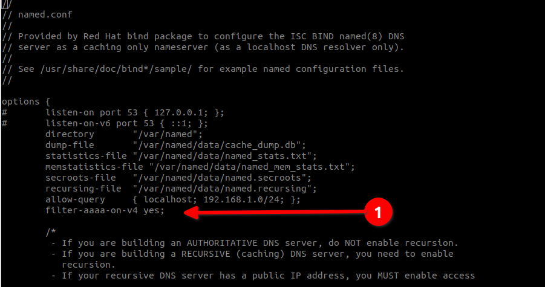

Private DNS Server Using Bind
Prerequisites and Assumptions
- A server running Rocky Linux
- Several internal servers that need to be accessed only locally, but not over the Internet
- Several workstations that need access to these same servers that exist on the same network
- A healthy comfort level with entering commands from command line
- Familarity with a command line editor (we are using vi in this example)
- Able to use either firewalld or iptables for creating firewall rules. We've provided both iptables and firewalld options. If you plan to use iptables , use the Enabling Iptables Firewall procedure
Introduction
External, or public, DNS servers are used on the Internet to map host names to IP addresses and, in the case of PTR (known as "pointer" or "reverse") records, to map the IP to the host name. This is an essential part of the Internet. It makes your mail server, web server, FTP server, or many other servers and services work as expected no matter where you are.
On a private network, particularly one that is being used for developing multiple systems, you can use your Rocky Linux workstation's /etc/hosts file to map a name to an IP address.
This will work for your workstation, but not for any other machine on your network. If you want to make things universally applied, then the best method is to take some time out and create a local, private DNS server to handle this for all of your machines.
If you were creating production-level public DNS servers and resolvers, then this author would probably recommend the more robust PowerDNS authoritative and recursive DNS, which is easily installed on Rocky Linux servers. However, that is simply overkill for a local network that won't be exposing its DNS servers to the outside world. That is why we have chosen bind for this example.
The DNS Server Components Explained
As stated, DNS separates services into authoritative and recursive servers. These services are now recommended to be separate from each other on separate hardware or containers.
The authoritative server is the storage area for all IP addresses and host names, and the recursive server is used to lookup addresses and host names. In the case of our private DNS server, both the authoritative and the recursive server services will run together.
Installing and Enabling Bind
The first step is to install packages. In the case of bind we need to execute the following command:
dnf install bind bind-utils
The service daemon for bind is called named, and we need to enable this to start on boot:
systemctl enable named
And then we need to start it:
systemctl start named
Configuration
Before making changes to any configuration file, it is a good idea to make a backup copy of the original installed working file, in this case named.conf:
cp /etc/named.conf /etc/named.conf.orig
That will help in the future if errors are introduced into the configuration file. It is always a good idea to make a backup copy before making changes.
These changes require us to edit the named.conf file, to do this, we are using vi, but you can substitute your favorite command line editor (the editor nano is also installed in Rocky Linux and is easier to use than vi):
vi /etc/named.conf
First thing we want to do is turn off listening on the localhost, this is done by remarking out with a "#" sign, these two lines in the "options" section. What this does is to effectively shutdown any connection to the outside world.
This is helpful, particularly when we go to add this DNS to our workstations, because we want these DNS server to only respond when the IP address requesting the service is local, and simply not respond at all if the service that is being looked up is on the Internet.
This way, the other configured DNS servers will take over nearly immediately to look up the Internet based services:
options {
# listen-on port 53 { 127.0.0.1; };
# listen-on-v6 port 53 { ::1; };
Finally, skip down to the bottom of the named.conf file and add a section for your network. Our example is using ourdomain, so sub in what you want to call your LAN hosts:
# primary forwward and reverse zones
//forward zone
zone "ourdomain.lan" IN {
type master;
file "ourdomain.lan.db";
allow-update { none; };
allow-query {any; };
};
//reverse zone
zone "1.168.192.in-addr.arpa" IN {
type master;
file "ourdomain.lan.rev";
allow-update { none; };
allow-query { any; };
};
Now save your changes (for vi, SHIFT:wq!)
Using IPv4 On Your LAN
If you are using IPv4 only on your LAN, then you need to make two changes. The first is in /etc/named.conf and the second is in /etc/sysconfig/named
First, get back into the named.conf file again with vi /etc/named.conf. We need to add the following option anywhere in the options section.
filter-aaaa-on-v4 yes;
This is shown in the image below:

Once you've made the change, save it and exit the named.conf (for vi, SHIFT:wq!)
Next we need to make a similar change to /etc/sysconfig/named:
vi /etc/sysconfig/named
And then add this to the bottom of the file:
OPTIONS="-4"
Now save those changes (again, for vi, SHIFT:wq!)
The Forward and Reverse Records
Next, we need to create two files in /var/named. These files are the ones that you will edit if you add machines to your network that you want to include in the DNS.
The first is the forward file to map our IP address to the hostname. Again, we are using "ourdomain" as our example here. Note that the IP of our local DNS here is 192.168.1.136. The hosts are added at the bottom of this file.
vi /var/named/ourdomain.lan.db
The file will look something like this when you are done:
$TTL 86400
@ IN SOA dns-primary.ourdomain.lan. admin.ourdomain.lan. (
2019061800 ;Serial
3600 ;Refresh
1800 ;Retry
604800 ;Expire
86400 ;Minimum TTL
)
;Name Server Information
@ IN NS dns-primary.ourdomain.lan.
;IP for Name Server
dns-primary IN A 192.168.1.136
;A Record for IP address to Hostname
wiki IN A 192.168.1.13
www IN A 192.168.1.14
devel IN A 192.168.1.15
Add as many hosts as you need to the bottom of the file along with their IP addresses and then save your changes.
Next, we need a reverse file to map our hostname to the IP address, In this case, the only part of the IP that you need is the last octet (in an IPv4 address each number separated by a period, is an octet) of the host and then the PTR and hostname.
vi /var/named/ourdomain.lan.rev
And the file should look something like this when you are done.:
$TTL 86400
@ IN SOA dns-primary.ourdomain.lan. admin.ourdomain.lan. (
2019061800 ;Serial
3600 ;Refresh
1800 ;Retry
604800 ;Expire
86400 ;Minimum TTL
)
;Name Server Information
@ IN NS dns-primary.ourdomain.lan.
;Reverse lookup for Name Server
136 IN PTR dns-primary.ourdomain.lan.
;PTR Record IP address to HostName
13 IN PTR wiki.ourdomain.lan.
14 IN PTR www.ourdomain.lan.
15 IN PTR devel.ourdomain.lan.
Add all of the hostnames that appear in the forward file and then save your changes.
What All Of This Means
Now that we have all of this added in and are preparing to restart our bind DNS server, let's just explore some of the terminology that is used in these two files.
Just making things work isn't good enough if you don't know what each term means, right?
- TTL appears in both files and it stands for "Time To Live." TTL tells the DNS server how long to keep its cache in place before requesting a fresh copy. In this case, the TTL is the default setting for all records unless a specific record TTL is set. The default here is 86400 seconds or 24 hours.
- IN stands for Internet. In this case, we aren't actually using the Internet, so think of this as the Intranet.
- SOA stands for "Start Of Authority" or what the primary DNS server is for the domain.
- NS stands for "name server"
- Serial is the value used by the DNS server to verify that the contents of the zone file are up-to-date.
- Refresh specifies how often a slave DNS server should do a zone transfer from the master.
- Retry specifies the length of time in seconds to wait before trying again on a failed zone transfer.
- Expire specifies how long a slave server should wait to answer a query when the master is unreachable.
- A Is the host address or forward record and is only in the forward file (above).
- PTR Is the pointer record better known as the "reverse" and is only in our reverse file (above).
Testing Configurations
Once we have gotten all of our files created, we need to make sure that the configuration files and zones are in good working order before we start the bind service again.
Check the main configuration:
named-checkconf
This should return an empty result if everything is OK.
Then check the forward zone:
named-checkzone ourdomain.lan /var/named/ourdomain.lan.db
This should return something like this if all is well:
zone ourdomain.lan/IN: loaded serial 2019061800
OK
And finally check the reverse zone:
named-checkzone 192.168.1.136 /var/named/ourdomain.lan.rev
Which should return something like this if all is well:
zone 192.168.1.136/IN: loaded serial 2019061800
OK
Assuming that everything looks good, go ahead and restart bind:
systemctl restart named
Testing Machines
You need to add the DNS server (in our example 192.168.1.136) to each machine that you want to have access to the servers that you added to your new local DNS. We are only going to show you an example of how to do this on a Rocky Linux workstation, but there are similar methods for other Linux distributions, as well as Windows and Mac machines.
Keep in mind that you will want to just add the DNS server in the list, as you will still need Internet access, which will require your currently assigned DNS servers. These might be assigned via DHCP (Dynamic Host Configuration Protocol) or statically assigned.
On a Rocky Linux workstation where the enabled network interface is eth0, you would use:
vi /etc/sysconfig/network-scripts/ifcfg-eth0
If your enabled network interface is different, you will need to substitute that interface name. The configuration file that you open will look something like this for a statically assigned IP (not DHCP as mentioned above). In the example below, our machine's IP address is 192.168.1.151:
DEVICE=eth0
BOOTPROTO=none
IPADDR=192.168.1.151
PREFIX=24
GATEWAY=192.168.1.1
DNS1=8.8.8.8
DNS2=8.8.4.4
ONBOOT=yes
HOSTNAME=tender-kiwi
TYPE=Ethernet
MTU=
We want to substitute in our new DNS server for the primary (DNS1) and then move each of the other DNS servers down one so that it is like this:
DEVICE=eth0
BOOTPROTO=none
IPADDR=192.168.1.151
PREFIX=24
GATEWAY=192.168.1.1
DNS1=192.168.1.136
DNS2=8.8.8.8
DNS3=8.8.4.4
ONBOOT=yes
HOSTNAME=tender-kiwi
TYPE=Ethernet
MTU=
Once you've made the change, either restart the machine or restart networking with:
systemctl restart network
Now you should be able to get to anything in the ourdomain.lan domain from your workstation, plus still be able to resovle and get to Internet addresses.
Firewall Rules
Adding The Firewall Rules - iptables
First, create a file in /etc called "firewall.conf" that will contain the following rules. This is a bare minimum rule set, and you may need to tweak this for your environment:
#!/bin/sh
#
#IPTABLES=/usr/sbin/iptables
# Unless specified, the defaults for OUTPUT is ACCEPT
# The default for FORWARD and INPUT is DROP
#
echo " clearing any existing rules and setting default policy.."
iptables -F INPUT
iptables -P INPUT DROP
iptables -A INPUT -p tcp -m tcp -s 192.168.1.0/24 --dport 22 -j ACCEPT
# dns rules
iptables -A INPUT -p udp -m udp -s 192.168.1.0/24 --dport 53 -j ACCEPT
iptables -A INPUT -i lo -j ACCEPT
iptables -A INPUT -m state --state ESTABLISHED,RELATED -j ACCEPT
iptables -A INPUT -p tcp -j REJECT --reject-with tcp-reset
iptables -A INPUT -p udp -j REJECT --reject-with icmp-port-unreachable
/usr/sbin/service iptables save
Let's evaluate the rules above:
- The first "iptables" line flushes the rules that are currently loaded (-F).
- Next, we are setting a default policy for the INPUT chain of DROP. This means, if the traffic is not explicitly allowed here, it is dropped.
- Next, we have an SSH rule for our local network, so that we can get into the DNS server remotely.
- Then we have our DNS allow rule, only for our local network. Note that DNS uses the UDP protocol (User Datagram Protocol).
- Next we allow INPUT from the local interface.
- Then if you have established a connection for something else, we are allowing related packets in as well.
- And finally we reject everything else.
- The last line tells iptables to save the rules so that when the machine restarts, the rules will load as well.
Once our firewall.conf file is created, we need to make it executable:
chmod +x /etc/firewall.conf
Then run it:
/etc/firewall.conf
And this is what you should get in return. If you get something else, take a look at your script for errors:
clearing any existing rules and setting default policy..
iptables: Saving firewall rules to /etc/sysconfig/iptables:[ OK ]
Adding The Firewall Rules - firewalld
With firewalld, we are duplicating the rules highlighted in iptables above. We aren't making any other assumptions about the network or services that might be needed. We are turning on SSH access and DNS access for our LAN network only. For this, we will use the firewalld built-in zone, "trusted". We will also have to make some service changes to the "public" zone in order to limit SSH access to the LAN.
The first step is to add our LAN network to the "trusted" zone:
firewall-cmd --zone=trusted --add-source=192.168.1.0/24 --permanent
Next, we need to add our two services to the "trusted" zone:
firewall-cmd --zone=trusted --add-service=ssh --permanent
firewall-cmd --zone=trusted --add-service=dns --permanent
Finally, we need to remove the SSH service from our "public" zone, which is on by default:
firewall-cmd --zone=public --remove-service=ssh --permanent
Next, reload the firewall and then list out the zones that we've made changes to:
firewall-cmd --reload
firewall-cmd --zone=trusted --list-all
Which should show that you have correctly added the services and the source network:
trusted (active)
target: ACCEPT
icmp-block-inversion: no
interfaces:
sources: 192.168.1.0/24
services: dns ssh
ports:
protocols:
forward: no
masquerade: no
forward-ports:
source-ports:
icmp-blocks:
rich rules:
Listing out the "public" zone should show that SSH access is no-longer allowed:
firewall-cmd --zone=public --list-all
public
target: default
icmp-block-inversion: no
interfaces:
sources:
services: cockpit dhcpv6-client
ports:
protocols:
forward: no
masquerade: no
forward-ports:
source-ports:
icmp-blocks:
rich rules:
These rules should get you DNS resolution on your private DNS server from hosts on the 192.168.1.0/24 network. In addition, you should be able to SSH from any of those hosts into your private DNS server.
Conclusions
While using /etc/hosts on an individual workstation will get you access to a machine on your internal network, you can only use it on that one machine. By adding a private DNS server using bind, you can add hosts to the DNS and as long as the workstations have access to that private DNS server, they will be able to get to these local servers.
If you don't need machines to resolve on the Internet, but do need local access from several machines to local servers, then consider using a private DNS server instead.